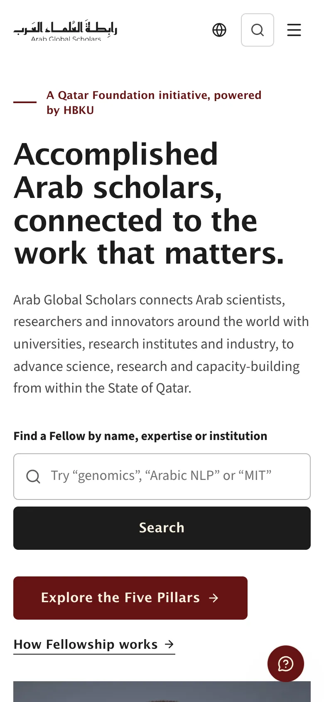
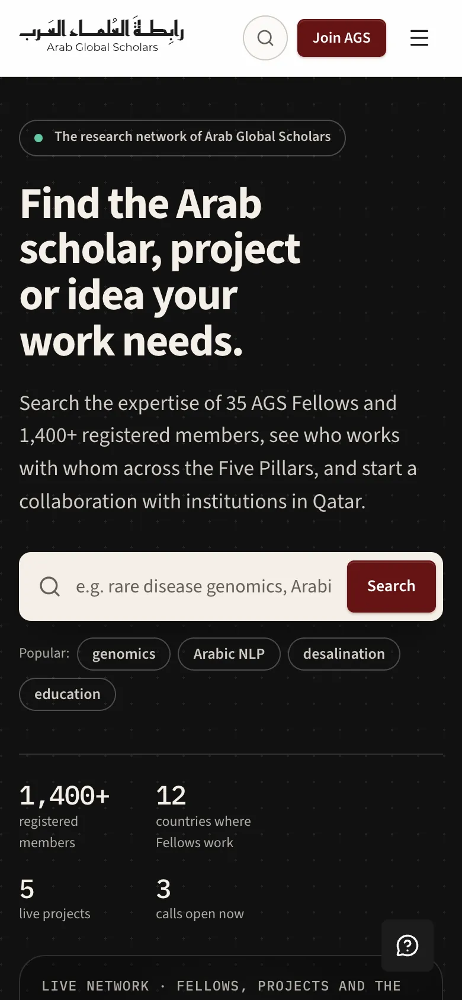
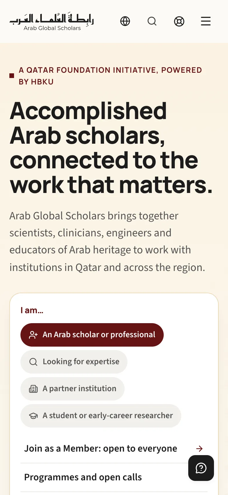

Four ways into Arab Global Scholars
Four website concepts built on the same brand, content, membership rules and platform. Each one puts a different idea at the front door. Read how they differ, then open any concept in English or Arabic.
-
1Contemporary Academic
A scholarly publication. Named Fellows and their ideas come first.
-
2Research-Focused
A search engine for Arab expertise. The network is something you explore.
-
3Balanced Institutional
A clear front door. It asks who you are and sends you to the right place.
-
4Cinematic Digital Flagship
A flagship brand. Full-screen photography and large type tell the AGS story.
What all four share
The concepts differ in look, homepage emphasis and navigation, not in what AGS offers. All four follow the same AGS Board Bylaws and the same scope of work. Choosing between them is a choice about what visitors meet first and how they find their way.
- Brand and contentAGS maroon, the bilingual logo and the Qatar Foundation and HBKU endorsement. The same Fellows, Five Pillars, Focus Areas, projects, calls, events and stories. People and figures are fictional samples.
- MembershipAnyone who supports the mission can register as an Affiliate Member: agree to the Code of Conduct, name your expertise, no approval needed. Fellowship has no application. Fellows are nominated in confidence by existing Fellows and elected by a two-thirds Board vote, up to five a year.
- GovernanceAs the bylaws set out: a Board of Fellows, a five-member Steering Committee drawn from the Board, and a Secretariat with a non-voting seat. Ballots, quorum, meeting notice and minutes follow the bylaw rules.
- PlatformA Member area; a Fellow portal with governance inside it; a Partner workspace; and a Secretariat super-admin for content, people, broadcasts, support, webinars and reports.
- Privacy and helpConsent at sign-up, cookie choices, data export and account deletion. A help center, support tickets, a demo live chat and feedback tools.
- English and ArabicEvery page in both languages, with full right-to-left layouts set in Noto Kufi Arabic.
- Same addressesThe same 123 page addresses work in every concept. Swap the concept in a link and you land on the equivalent page.
- Prototype limitsNo real accounts or backend. Sign-in is simulated, and anything you do is saved only in your browser.
Where they differ
The biggest difference is what each homepage leads with, and who it serves first. Concepts 1 and 3 explain AGS. Concept 2 helps you find people and research. Concept 4 sells the network as a brand. Joining, the signed-in areas and the rules behind them are the same in all four; only their presentation changes.
| 1 Contemporary Academic | 2 Research-Focused | 3 Balanced Institutional | 4 Cinematic Digital Flagship | |
|---|---|---|---|---|
| Choose it if AGS should be seen first as | A serious scholarly institution with named people at its heart | The place to find Arab expertise and collaborators | An accessible, trustworthy institution for every audience | A flagship brand with a global network behind it |
| Homepage opens with | Fellow search beside a rotating portrait and quote from a featured Fellow | A large search box and key figures beside an interactive network of Fellows, projects and Pillars, on a dark background | An “I am…” chooser for four audiences, beside tiles for the Annual Gathering, registered members and the next deadline | Full-screen photography that changes every 6 seconds behind a large headline, with four headline options to review |
| Serves first | Academics, peers and editors | Researchers and partners looking for expertise | First-time visitors, media, government and partners | Prospective members, the public and funders |
| Look | White and cream pages, maroon accents, a deep maroon map band. Noto Sans and Source Sans headings. | Black hero, warm gray pages, a different color for each of the Five Pillars. Monospaced figures. | Warm white and cream, rounded tiles, Kufic-square Pillar symbols. Manrope headings. | Photography and night-black chapters with cream and sand type. Wide Archivo headings. |
| Navigation | Sticky menu with Explore and Knowledge mega menus. Search dialog with ⌘K. | One sticky bar with Discover and Knowledge menus. Search is the main way around, with a ⌘K command palette. | Sticky menu with descriptive mega menus for each section. Inner pages add local menus. | Transparent menu over photos that turns solid on scroll. Full-screen menu on smaller screens. |
| Signed-in layout | Sidebar, with a “Today” home for Fellows and bottom tabs on phones | Collapsible sidebar with grouped sections and a command bar | Horizontal section bar, with tabs for related pages | Horizontal section bar, with tabs for related pages, as in Concept 3 but in Concept 4’s own type and colors |
| Joining experienceAll four collect the same information and create the same Member account | Three stages: start from ORCID, a CV or from scratch, with a live profile preview and strength score | Import from ORCID or a CV, then place yourself on the Pillars × Focus Areas map next to related Fellows | Step by step: “Who is joining” first (nobody is turned away), then account and profile, ending with “Check your answers” | Eight short stages with a live preview of your profile. About eight minutes, and you can save and continue later |
| How it presents shared features | An editorial homepage. Separate News, Podcast and Library sections under a Knowledge menu. An Explore matrix of Pillars and Focus Areas. | A network graph and world map in the directory. Discover faceted search, a Taxonomy matrix and a Collaborate marketplace of open roles. | Audience gateways on the homepage. About pages with local menus. A tabbed Opportunities hub for calls, funding and projects. | A photo stage with four headline options and a stories reel. A Network page as the directory. A tabbed Opportunities hub. |
| Motion | Portrait and quote change every 6 seconds, with a pause button | None on a timer. The graph responds to filters and clicks. | Minimal: menus, tabs and a testimonial switcher | The most: photo crossfades, a scroll-driven Pillars chapter and a sideways stories reel |
| Prototype scope | All 123 shared addresses, plus an activity groups page for Fellows | All 123 shared addresses, plus a taxonomy coverage page for the Secretariat | All 123 shared addresses | All 123 shared addresses |
Joining always means an account, a confirmed email, agreeing to the Code of Conduct, a separate consent to data processing, and at least one area of expertise and one Pillar or Focus Area. Nobody becomes a Fellow this way: newly elected Fellows get an invitation and their own onboarding.
Concept 1
Contemporary Academic
AGS as a respected scholarly publication. Named Fellows and their ideas lead, with a dependable working platform behind them.

Homepage, top to bottom
- Fellow search and featured Fellow
- AGS at a glance in four figures
- Five Pillars index with previews
- Focus Areas in photos
- Fellows and their quotes
- World map band in deep maroon
- Research in progress, seeking expertise
- Open calls and upcoming events
- Stories, podcast and publications
- Partners
- Join as a Member, how Fellowship works, or partner with AGS
What sets it apart
- An editorial homepage led by a rotating Fellow portrait and quote, which you can pause
- Research, Programs, News, Podcast and Library as separate sections, each with its own pages
- A ⌘K search dialog across the site, with a shareable results page, and an Explore matrix of Pillars and Focus Areas
- Joining as a profile builder: start from ORCID, a CV or from scratch, with a live preview and strength score
- Signed-in areas in a sidebar, with a “Today” home for Fellows and bottom tabs on phones
Strengths
Credible and calm. Real scholars are the first thing you see, and the separate sections give publishing the deepest structure. The profile builder makes joining feel like starting a scholarly record.
Watch out for
The most conventional of the four. It needs strong portraits and a steady flow of editorial content to feel alive, and more top-level sections means more to keep filled.
- Headings
- Noto Sans
- Text
- Source Sans 3
- Arabic
- Noto Kufi Arabic
- Maroon#661414
- Deep maroon#3F0C0E
- Ink#1C1C1C
- Cream#FBF3E3
- Stone#F5F2EE
- White#FFFFFF
Concept 2
Research-Focused
AGS as a search engine for Arab expertise. Search is the front door, and the network of Fellows, projects and topics is something you can explore.

Homepage, top to bottom
- Search, key figures and the live network graph
- Pillars × Focus Areas matrix
- Roles open on live projects
- Expertise index and Fellows open to collaboration
- Open calls and the calendar
- New work: stories, publications, podcast
- Join as a Member, how Fellowship works, find expertise; partner logos
What sets it apart
- A network graph you can filter by Pillar, and a world map in the directory. Each Fellow’s profile shows their own connections.
- Discover: one faceted search across people, expertise, projects, calls and knowledge, plus an A–Z expertise index
- A Taxonomy heat map of Pillars × Focus Areas, showing where AGS is strong or thin
- Collaborate: a marketplace of open roles on live projects
- Joining imports your record, then you place yourself on the Pillars × Focus map next to related Fellows
Strengths
The fastest route for researchers and partners who need expertise. It makes the network itself visible, and its workspace, with a collapsible sidebar and command bar, suits heavy daily use.
Watch out for
Less welcoming for media, government and first-time visitors. The graph and heat map are only as convincing as the real data behind them.
- Headings and text
- Source Sans 3
- Figures
- IBM Plex Mono
- Arabic
- Noto Kufi Arabic
- Night#121212
- Maroon#661414
- Paper#F6F5F2
- Five Pillars5 colors
Concept 3
Balanced Institutional
A clear front door for every kind of visitor. It asks who you are and points you to the right place, with deadlines, governance and trust up front.

Homepage, top to bottom
- “I am…” chooser and highlights
- Find a Fellow
- The Five Pillars explained
- Focus Areas in photos
- Where Fellows work: numbers and world map
- Open calls and key dates timeline
- Featured Fellows
- Stories and upcoming events
- Testimonials, how AGS is governed, partners
- Join as a Member or partner with AGS
- Monthly briefing sign-up
What sets it apart
- Gateways for four audiences: scholars, people seeking expertise, partners and students
- Upcoming deadlines and events in one timeline
- The Board, Steering Committee and bylaws summarized on the homepage
- Inner pages with local menus and Kufic-square Pillar symbols, and a tabbed Opportunities hub
- The most guided joining: “Who is joining” first, then one step at a time, ending with “Check your answers” and a Member account straight away
Strengths
The easiest for non-specialists, partners, media and government. It is the clearest about deadlines and how AGS is governed, and its joining journey leaves the least room for confusion.
Watch out for
The least distinctive look. The homepage is static and gives little sense of a living network, and its many short joining steps may feel slow to experienced researchers.
- Headings
- Manrope
- Text
- Source Sans 3
- Arabic
- Noto Kufi Arabic
- Maroon#661414
- Ink#1C1C1C
- Cream#FBF3E3
- Ground#FCFAF6
- Stone#F2F0EB
Concept 4
Cinematic Digital Flagship
A flagship for a global intellectual network. Photography and large type tell the AGS story, while the working screens stay calm. Its homepage makes the most of the two ways to belong: as a Member or as a Fellow.


Homepage, top to bottom
- Full-screen photo stage and headline
- The network on a world map
- Fellow stories, scrolled sideways
- The Five Pillars as a scroll story
- Focus Areas in photos
- Now open: calls, places, projects and events
- Listen and read
- Two ways to belong: Member or Fellow
- Partners
What sets it apart
- Four headline options for leadership to compare, switchable on the page or by link
- A seven-photo stage, a sideways stories reel, and a Pillars chapter whose image changes as you scroll
- A Network page as the directory, where a seal marks Founding and Elected Fellows
- Joining as eight short stages with a live preview of your profile, ORCID and CV import, and save-and-continue
- A transparent menu over photographs, and a full-screen menu on smaller screens
Strengths
The strongest brand and recruitment impact. Its “Two ways to belong” chapter explains the difference between Members and Fellows more vividly than any other concept.
Watch out for
Depends on high-quality photography and has the most motion. The cinematic style must be kept up across new pages and content, which asks more of the team running the site.
- Headings
- Archivo, 112% wide
- Text
- Source Sans 3
- Arabic
- Noto Kufi Arabic
- Night#1C1C1C
- Raised#242121
- Cream#FBF3E3
- Sand#E3C28F
- Maroon#661414